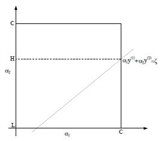

分类问题
SVM（support vector machine）是一种著名的分类算法。我们学过Logistic回归，但它只能处理简单的线性分类。在现实生活中，很多问题的属性不能简单的用线性分类完成，或者说线性分类的效果不好，这时候我们就要想其他办法。
超平面
我们可以想象这样一个方程：
wTx+b=0
若这里的x是二维向量，那么就是我们熟悉的平面方程。若大于二维，则是一个超平面，在SVM中，这个超平面也被称为决策面。
我们的目标就是想找到这样一个决策面，使得样本点能够较好的分布在超平面两侧，这就达到了我们分类的目的。
Part1
首先用一种简单的方法得到优化问题。
分类间隔
很显然，对于样本点来说，这样的决策面肯定不止一个。那么，如何来度量我们分类好坏的标准呢？
在SVM中，我们使用分类间隔来度量，所谓分类间隔，是指保证决策面方向不变且不会错分样本的情况下移动决策面，会在原来的决策面两侧找到两个极限位置（越过则会产生错分现象）。因此，这两条平行线（面）之间的垂直距离就是这个决策面对应的分类间隔。
不同方向的最优决策面通常是不同的，那个具有最大间隔的决策面就是SVM要寻找的最优解。而这个真正的最优解对应的两侧虚线所穿过的样本点，就是SVM中的支持样本点，称为支持向量。
根据我们学习过的平面距离可以得到：
d=∣∣w∣∣∣wT+b∣
我们首先考虑一个决策面是否能够将所有样本都正确分类的约束。我们可以为每个样本点xi加上一个类别标签yi={−1,1}，假如我们的决策面方程能够完全正确的对所有样本点进行分类，则可以得到：
f(x)={wTxi+b>0 for yi=1wTxi+b<0 for yi=−1
如果我们要求再高一点，假设决策面正好处于间隔区域的中轴线上，并且相应的支持向量对应的样本点到决策面的距离为d，那么公式可以进一步写成：
f(x)={(wTxi+b)/∣∣w∣∣≥d ∀yi=1(wTxi+b)/∣∣w∣∣≤−d ∀yi=−1
对公式重写（两边同时除以d）：
f(x)={wdTxi+bd≥1 for yi=1wdTxi+bd≤1 for yi=−1wd=∣∣w∣∣dw,bd=∣∣w∣∣db
由于wd与w并没有本质差别，因此不再做区分，我们的目标是想要在正确分类的情况下使得分类间隔最大化，即max{d}，也就是min∣∣wd∣∣∣wdTxi+bd∣≥∣∣wd∣∣1，也等价于min{21∣∣wd∣∣2}。
因此，我们得到我们问题的总描述：
min21∣∣w∣∣2
s.t.yi(wTxi+b)≥1,i=1,...,n
Part2
使用margin得到优化问题。
margins
- Functional margins
- γ(i)^=y(i)(wTx+b)
- 这个函数可以用来衡量confident和correct
- 如果分类正确，那么该函数始终是正数，且离决策边界越远，值越大，也就越confident
- 如果分类错误，那么该函数是负数
- 因此，我们的目标是找到最小的margin，也就是 γ^=minγ(i)^
- Geometric margins
- Functional margins有一个很大的问题在于，如果我等比例的scale w,b，那么该值就一定会增大。但此时对于margin来说并没有提升，因此无法直接用来衡量。
- 我们新定义一个Geometric margins，可以认为是一个相对的大小：
- γ(i)=y(i)(∣∣w∣∣wTx+∣∣w∣∣b)
- 实际上，γ=∣∣w∣∣γ^
- 我们的目标不变:
- γ=minγ(i)
- 问题表述为：
- maxγ
- s.t.y(i)(wTx(i)+b)≥γ
- ∣∣w∣∣=1
- 很容易证明，这时候无论w,b 如何 scale，都不会影响margins了。（类似于normalization）
- 但由于有∣∣w∣∣=1的条件，类似于在球面上进行优化，不是一个凸优化问题，很难求解。
Optimal margin classifier
我们的目标是最大化geometry margins，因此可以将原问题写为：
max∣∣w∣∣γ
s.t.y(i)(wTx(i)+b)≥γ
但这依然不容易求解，联想到，我们已经使得无论w,b 如何 scale，都不会影响最终的值，因此，总是可以使w,b 满足γ=1，因此，我们的目标函数可以写为max∣∣w∣∣1。注意到，最大化∣∣w∣∣1和最小化∣∣w∣∣2是一回事情（更容易求导），因此，我们将原问题转为了凸优化问题（没有局部最优值）：
min21∣∣w∣∣2
s.t.yi(wTxi+b)≥1,i=1,...,n
线性可分情况
拉格朗日函数
这是一个有约束条件的极值问题，因此可使用拉格朗日函数表达：
L(w,b,a)=21∣∣w∣∣2−i=1∑nαi(yi(wTxi+b)−1)
我们令αi≥0,θ(w)=maxai≥0L(w,b,a)。容易验证：当某个约束条件不满足时，例如yi(wTxi+b)<1，则有θ(w)=∞（只要令αi=∞而当所有约束都满足时，则有θ(w)=21∣∣w∣∣2，即为最初要最小化的量。
这样，我们就使用拉格朗日函数将所有约束条件集中到一个函数中，目标函数变成了：
w,bminθ(w)=w,bminαi≥0maxL(w,b,a)=p∗
这里用p∗表示这个问题的最优解，且与最初的问题是等价的，但如果直接面对这个函数，有w,b两个参数，并且α还是不等式约束，不好求解。那么我们可以转化为对偶问题：
αi≥0maxw,bminL(w,b,a)=d∗
这个新问题的最优解表示为d⋆，且有d⋆≤p⋆（总是成立）,在某些情况下这两者相等，因此可以求解对偶问题来间接求解原始问题。
KKT条件
由于对偶问题和原始问题有 d⋆≤p⋆ 的关系，但我们更希望取等号，这样我们就可以利用对偶问题来求得原问题的最优解。
而满足这种条件的约束称为KKT条件。
首先重新定义一下凸优化问题：
minf(w)
s.t.gi(w)≤0
hi(w)=0
拉格朗日函数可以表示为：L(w,α,β)=f(w)+∑αigi(w)+∑βih(w)
KKT条件可以表示为：
∂wi∂L(w∗,α∗,β∗)=0
∂βi∂L(w∗,α∗,β∗)=0
αi∗gi∗(w∗)=0
gi(w∗)≤0
α∗≥0
其中第三个条件被称为dual complementarity condition，也就是说，只有在gi⋆(w⋆)=0时α≠0，也就是真正作为support vector，在后面的SMO中会有帮助。
对偶问题求解
我们需要求解的方程为：
αi≥0maxw,bminL(w,b,a)=d∗
首先固定α，对w,b求导数：
∂w∂L=0⇒w=i=1∑naiyixi
∂b∂L=0⇒i=1∑naiyi=0
将上面的结果带到L(w,b,a)中可得：
L(w,b,a)=21∥w∥2−i∑=1nαi(yi(wTxi+b)−1)=21∥w∥2−i∑=1naiyiwTxi−i∑=1naiyib+i∑=1nai=−21i∑,j=1naiajyiyjxT−ixj+i∑=1nai
这样，我们的目标函数就变为：
αmaxi=1∑nai−21i,j=1∑naiajyiyjxiTxj
s.t.ai≥0,i=1,...,andi=1∑naiyi=0
这样，我们的目标就变成了求α，从而可以求出：
w=i=1∑naiyixi
b=−2maxi:yi=−1wTx+mini:yi=1wTxi
求α比直接求w,b简单多了，其中SMO算法是目前最常用的，我们之后再说。
我们目前的分类函数为f(x)=wTx+b，带入：
f(x)=(∑αiyixi)Tx+b=∑αiyi(xi,xj)+b
注意，这里的(xi,xj)表示向量乘积，因此，对于新点x，只需要计算它与训练数据点的内积即可。这一点在之后的kernel函数中也会使用。
同时，如果我们的αi≠0，说明该变量对w有贡献，因此为support vector（可以直接从KKT条件中的function margin=1得到）。
线性不可分情况
核函数
- 将attributes -> feature 的过程定义为feature mapping，例如
- ϕ(x)=⎣⎡xx2x3⎦⎤
- 因此，我们想从feature中进行学习，而不是原始的attributes。而注意到，我们对样本的预测只与内积有关，因此可以定义Kernel：K(x,z)=ϕ(x)Tϕ(z)
- 这样，在原始算法中的所有内积都用Kernel代替，这样就实现了从feature中学习
- 这里最值得注意的是，为什么我们不直接学习feature的表示，而要学习kernel呢？
- 因为kernel的计算代价可能远远小于提取feature
- 例如，如果K(x,z)=(xTz+c)d，则对应于Cn+dn个feature space，而对于计算kernel来说，复杂度只有O(n)
- 这种kernel的思想并不仅仅适用于SVM，只要有内积的形式，都可以使用，可以大大减少feature空间的维度
- 直觉来说，如果ϕ(x)和ϕ(z)越相近，则我们希望得到的K(x,z)越大，反之越小
- 例如Gaussian kernel：K(x,z)=exp(−wσ2∣∣x−z∣∣2)
- correspond to an infinite dimensional feature mapping
正则化&不可分
- 当我们用ϕ将数据映射到高维特征空间，并不能提高线性可分的likelihood。同时，如果样本中存在outlier，会大大影响我们分类的效果和margin的大小。
- 因此，我们希望模型能够对outlier不敏感，加上正则项(l1正则化）：
- γ,w,bmin21∣∣w∣∣2+Ci=1∑mεi
- s.ty(i)(wTx(i)+b)≥1−εi
- εi≥0
- C越大，对误分类对惩罚越大，模型越复杂，泛化能力差。
- 这样，我们的拉格朗日问题就变为：
- L(w,b,ε,α,r)=21wTw+Ci=1∑mεi−i=1∑mαi[y(i)(xTw+b−1+εi)]−i=1∑mriεi
- 通过同样的方法，可以得到拉格朗日对偶问题为：
- αmaxi=1∑nai−21i,j=1∑naiajyiyj(xi(i),x(j))
- s.t.0≤α≤C
- i=1∑mαiy(i)=0
- 根据KKT条件，我们可以得到
- αi=0⇒y(i)(wTx(i)+b)≥1
- αi=C⇒y(i)(wTx(i)+b)≤1
- 0<αi<C⇒y(i)(wTx(i)+b)=1
SMO算法
我们已经将SVM的基本问题从attributes空间通过kernel转到feature空间，同时定义了有正则项的对偶函数，最后剩下的就是如何求解了。
Coordinate ascent
我们之前已经熟悉了gradient ascent和Newton's method两种优化算法，现在介绍一种新的优化方法。
假设我们的优化目标是αmaxW(α1,α2,...,αm)
那么，我们按照一定的order对某些变量依次进行更新（从启发式算法角度考虑，我们的更新order是从希望更新的参数变化最大的开始）：
αi:=argαi^maxW(α1,α2,..αi.,αm)
这种优化算法非常有效，收敛得很快。
SMO
αmaxi=1∑nai−21i,j=1∑naiajyiyj(x(i),x(j))
s.t.0≤α≤C
i=1∑mαiy(i)=0
我们如果直接对满足约束条件的优化问题使用coordinate ascent，则会发现，如果我们需要更新的α1，在约束条件下，没有办法得到更新后的值。这是因为：
α1y(1)=−i=2∑mαiy(i)
因此，解决该问题，至少需要我们同时更新两个值。
首先，如果我们同时更新α1,α2，则约束条件为：
α1y(1)+α2y(2)=−i=3∑mαiy(i)=ε
实际上，由于0≤α≤C，因此可以更进一步得到其范围：

带入目标函数为：
W(α1,α2,...,αm)=W((ε−α2y(2)),α2,...,αm)
实际上，根据我们之前写的W的具体形式，这里就是一个关于α2的二次型函数：aα22+bα2+c，同时满足某些约束L≤α2≤H，这样我们很容易就可以求得更新后的α2的值。
这样，我们就可以按照coordinate ascent的方式依次更新所有的参数，直到收敛。
Reference
- 从另一个方面看SVM的损失函数和正则项
- Regularization perspectives on support-vector machines